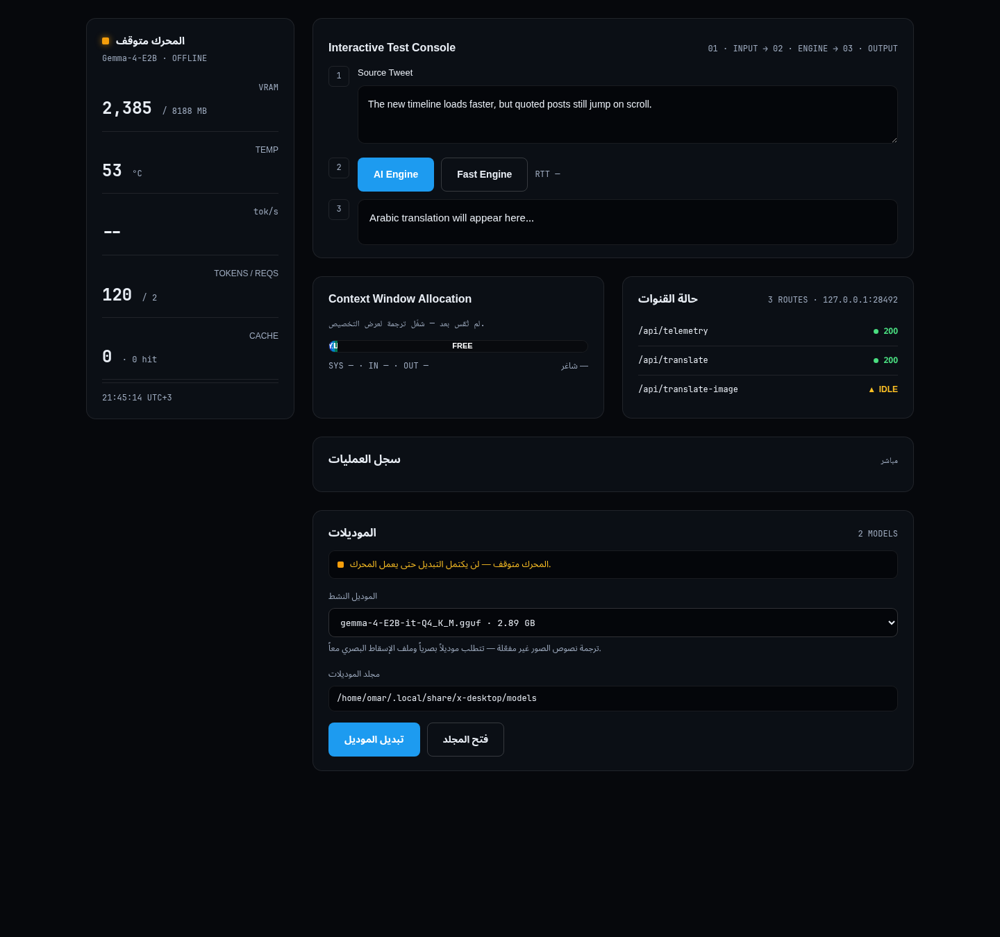

Translation that never leaves your GPU.
- Engine
- Gemma-4-E2BQ4_K_M, Vulkan-accelerated, served from loopback
- Context
- 12,288tokens, one model file loaded at a time
- Profile
- Isolatedown cookies, storage and cache — separate from your browser
- Platforms
- 4Debian, Fedora, Arch, Windows x64
Install the client. Then give it a model.
The client browses without any model at all. Translation needs one file, downloaded once.
Two engines. The difference is where your text goes.
One path runs entirely on your hardware. The other is a cloud request. Both are useful, and the client names which one answered rather than leaving you to guess.
What is actually implemented.
Each item below is present in the published source and described in the manual. Nothing here is planned, and nothing unshipped is advertised.
Isolated browsing profile
Cookies, storage and cache live under ~/.config/x-desktop on Linux and %APPDATA%\x-desktop on Windows — separate from every other browser on the machine.
Timeline filtering
Promoted posts, boosted entries and known advertising and analytics endpoints are blocked at the network layer before they render, so media in the same timeline is unaffected.
Selection and inline translation
Highlight text in a post to translate it in a floating tooltip, copy the result, or swap it inline and restore the original. Latin runs inside Arabic are bidi-isolated so mixed content stays readable.
Local engine dashboard with model switching
A telemetry wall on 127.0.0.1:28492 reports engine state, the loaded model, VRAM, temperature and measured throughput, runs a test translation, and switches between the models in your folder.
Google sign-in bridge
Google refuses to authenticate inside embedded views. The client routes that step to your system browser and imports the resulting session token through the Session Assistant.
Desktop integration
Tray with quick actions, MPRIS media controls on Linux, example tiling rules for Niri and Hyprland, and media download to your Downloads folder.

What it asks of your machine.
Linux x64 or Windows x64. Local translation expects a discrete GPU reachable through Vulkan; an NVIDIA RTX 4060 is the configuration the models were measured on. The model is a 2.89 GB download and holds roughly that much VRAM once loaded.
Without a compatible GPU the client still browses and the Fast engine still translates — the AI engine simply has nothing to load onto, and it reports that rather than failing silently.
The manual covers the rest.
Installation on each platform, the exact model files and where they belong, how to add and switch a model, every keyboard shortcut, where your data lives, and what to check when the engine is not ready.